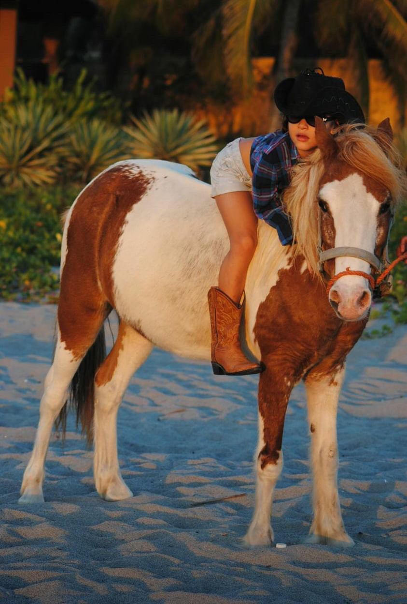
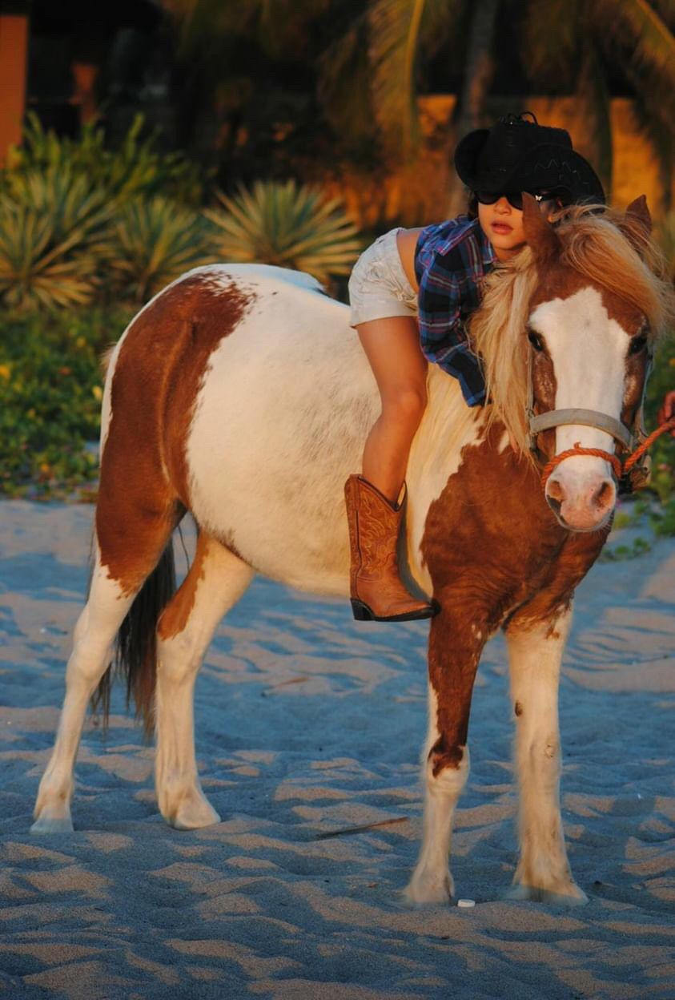

Esto está dirigida para una de las mejores personas que existen y conozco para que vea que sí es importante y no se nos ande achicopalando, se te quiere.
Mirennn toda una guapa la mandarina, como no quererla. Ahí como la ven es un amor de persona y siempre ha estado ahí para apoyarme, pero cuidadito que si no ha tomado café peligroso. Yo por ahí no paso, pero así se le quiere. Nos cambiaría a todos por Jack Ross, pero la verdad no la culpo, él es la perfección, solo le falta existir :,v, pero algún día él llegará a su vida a darle felicidad. Mientras tanto que se conforme con su amiguito cítrico. ¿Ya mencioné que la quiero?
 

Y los chingué, ustedes no tienen la dicha de estar así con la estimada mandarina ni la probarán, y los chinguéeee prioridades.

Ya te dijeee, me sigues haciendo esos ojos y te los saco, mandarina <3

Y esa guapaaaa, si saben que ella sabe teatro, fua, toda una pro. Cómo la quiero, nunca me tocó 'Cielito Lindo', pero así la quiero un chingo a ella, y ven ese gritito de el final, eso le da el toque porque ella es especial. Se te quiere Alison.